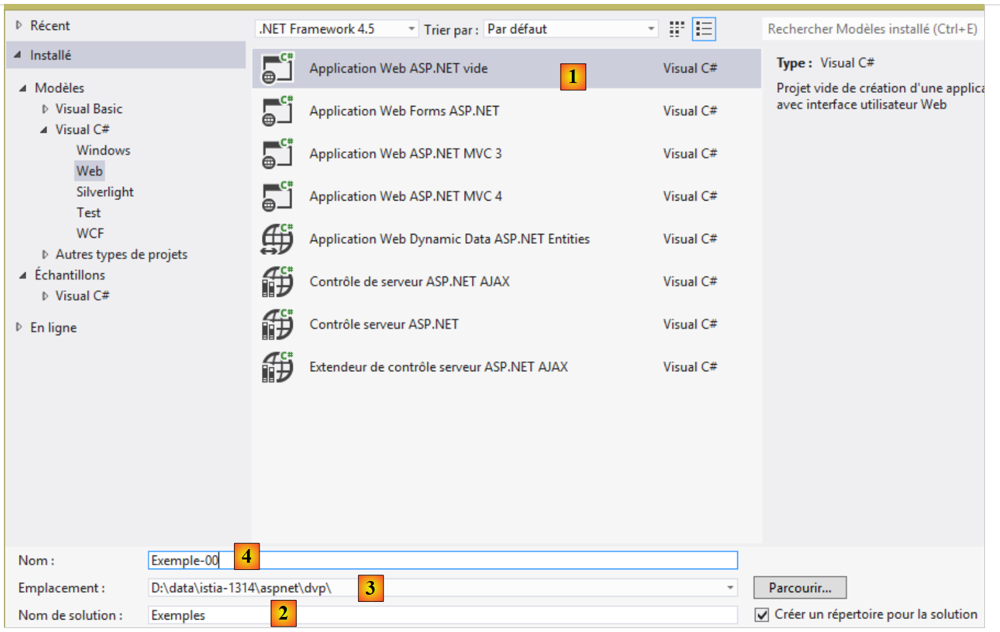
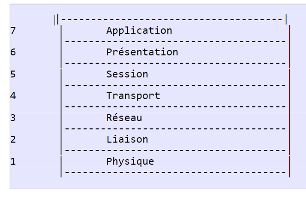
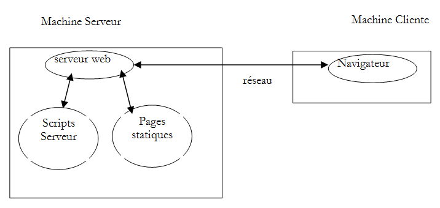
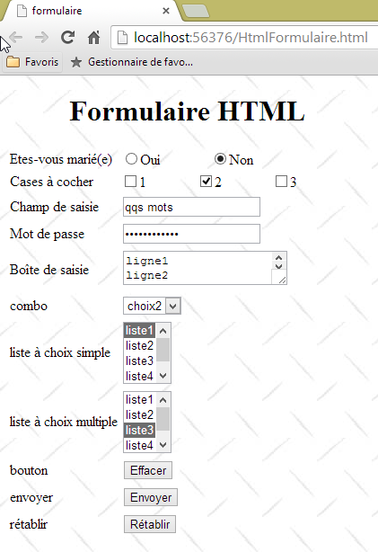
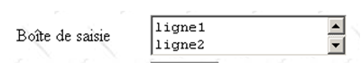
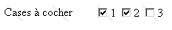

2. Fundamentos de la programación web
El objetivo principal de este capítulo es presentar los principios clave de la programación web, que son independientes de la tecnología específica utilizada para implementarlos. Presenta numerosos ejemplos que se anima a probar para "absorber" gradualmente la filosofía del desarrollo web. Los lectores que ya posean estos conocimientos pueden pasar directamente al capítulo siguiente.
Los componentes de una aplicación web son los siguientes:

Número | Papel | Ejemplos comunes |
1 | Servidor OS | Unix, Linux, Windows |
2 | Servidor web | Apache (Unix, Linux, Windows) IIS (plataforma Windows + .NET) Node.js (Unix, Linux, Windows) |
3 | Código del lado del servidor. Puede ser ejecutado por módulos del servidor o por programas externos al servidor (CGI). | JAVASCRIPT (Node.js) PHP (Apache, IIS) JAVA (Tomcat, WebSphere, JBoss, WebLogic, ...) C#, VB.NET (IIS) |
4 | Base de datos - Puede estar en la misma máquina que el programa que la utiliza o en otra máquina a través de Internet. | Oracle (Linux, Windows) MySQL (Linux, Windows) Postgres (Linux, Windows) servidor SQL (Windows) |
5 | Cliente OS | Unix, Linux, Windows |
6 | Navegador web | Chrome, Internet Explorer, Firefox, Opera, Safari, ... |
7 | Scripts del lado del cliente ejecutados en el navegador. Estos scripts no tienen acceso al disco de la máquina cliente. | JavaScript (todos los navegadores) |
2.1. Intercambio de datos en una aplicación web con un formulario

Número | Papel |
1 | El navegador solicita un URL por primera vez (http://machine/url). No se pasan parámetros. |
2 | El servidor web envía la página web para ese URL. Puede ser estática o generada dinámicamente por un script del lado del servidor (SA) que puede haber utilizado contenido de bases de datos (SB, SC). Aquí, el script detectará que el URL fue solicitado sin ningún parámetro y generará la página web inicial. El navegador recibe la página y la muestra (CA). Los scripts del navegador (CB) pueden haber modificado la página inicial enviada por el servidor. A continuación, a través de las interacciones entre el usuario (CD) y los scripts (CB), se modificará la página web. En particular, se rellenarán formularios. |
3 | El usuario envía los datos del formulario, que luego deben ser enviados al servidor web. El navegador solicita el URL inicial u otro, según corresponda, y transmite simultáneamente los valores del formulario al servidor. Para ello puede utilizar dos métodos: GET y POST. Al recibir la petición del cliente, el servidor activa el script (SA) asociado al URL solicitado, que detectará los parámetros y los procesará. |
4 | El servidor entrega la página web generada por el programa (SA, SB, SC). Este paso es idéntico al paso 2 anterior. La comunicación procede ahora según los pasos 2 y 3. |
2.2. Páginas web estáticas, páginas web dinámicas
Una página estática está representada por un archivo HTML. Una página dinámica es una página HTML generada "sobre la marcha" por el servidor web.
2.2.1. Página estática HTML (Lenguaje de marcado HyperText)
Vamos a crear nuestro primer proyecto web utilizando Visual Studio Express 2012. Utilizamos la opción [Archivo / Nuevo proyecto]:
 |
- en [1], especifique que desea crear una aplicación ASP.NET vacía;
- en [2], introduzca el nombre de la solución de Visual Studio. Todos los ejemplos de este documento estarán en la misma solución;
- en [3], la carpeta padre del proyecto que se va a crear;
- en [4], el nombre del proyecto.
Haga clic en OK.
 |
El proyecto resultante se muestra en [5]. Lo utilizaremos para ilustrar los principios básicos de la programación web.
Empecemos creando una página estática HTML:
 |
- en [1], haga clic con el botón derecho en el proyecto y siga las opciones;
 |
- en [2], dé un nombre a la página;
- en [3], se ha añadido la página.
El contenido de la página creada es el siguiente:
<!DOCTYPE html>
<html xmlns="http://www.w3.org/1999/xhtml">
<head>
<meta http-equiv="Content-Type" content="text/html; charset=utf-8"/>
<title></title>
</head>
<body>
</body>
</html>
- líneas 2-10: el código está encerrado por la etiqueta raíz <html>;
- líneas 3-6: el <cabeza> delimita lo que se denomina cabecera de la página;
- líneas 7-9: el <cuerpola etiqueta > delimita lo que se denomina el cuerpo de la página.
Modifiquemos este código de la siguiente manera:
<!DOCTYPE html>
<html xmlns="http://www.w3.org/1999/xhtml">
<head>
<meta http-equiv="Content-Type" content="text/html; charset=utf-8" />
<title>Test 1: a static page</title>
</head>
<body>
<h1>A static page...</h1>
</body>
</html>
- línea 5: define el título de la página - se mostrará como título de la ventana del navegador que muestre la página;
- línea 8: texto en letra grande (<h1>).
Veamos esta página en un navegador:
 |
- en [1], solicitamos ver la página;
- en [2], el URL de la página visualizada;
- en [3], el título de la ventana -proporcionado por el <título> etiqueta;
- en [4], el cuerpo de la página -proporcionado por el <h1> etiqueta.
Veamos [1] el código HTML recibido por el navegador:
 |
- en [2], el navegador recibió la página HTML que habíamos construido. La interpretó y la representó gráficamente.
2.2.2. Un ASP.NET Página
Ahora vamos a crear una página ASP.NET. Esta es una página HTML que puede contener código del lado del servidor y genera ciertas partes de la página. Seguimos un proceso similar al de la creación de la página HTML:
 |
- En [1], una página ASP.NET se denomina [Formulario Web];
 |
- En [2] se da un nombre a la nueva página;
- en [3], se ha creado la página.
El código de la página creada es el siguiente:
<%@ Page Language="C#" AutoEventWireup="true" CodeBehind="WebForm1.aspx.cs" Inherits="Exemple_00.WebForm1" %>
<!DOCTYPE html>
<html xmlns="http://www.w3.org/1999/xhtml">
<head runat="server">
<meta http-equiv="Content-Type" content="text/html; charset=utf-8"/>
<title></title>
</head>
<body>
<form id="form1" runat="server">
<div>
</div>
</form>
</body>
</html>
Vemos etiquetas HTML que ya hemos encontrado antes. Las etiquetas con el atributo [runat="server"] son etiquetas que serán procesadas por el servidor y convertidas en etiquetas HTML simples. Así que lo que vemos arriba no es, como en el caso de la página estática anterior, el código HTML que recibirá el navegador. Se trata de una página dinámica: el flujo HTML enviado al servidor es generado por código ejecutado en el lado del servidor. Modifiquemos la página como sigue:
<%@ Page Language="C#" AutoEventWireup="true" CodeBehind="WebForm1.aspx.cs" Inherits="Exemple_00.WebForm1" %>
<!DOCTYPE html>
<html xmlns="http://www.w3.org/1999/xhtml">
<head runat="server">
<meta http-equiv="Content-Type" content="text/html; charset=utf-8" />
<title>ASP.NET Demo</title>
</head>
<body>
<form id="form1" runat="server">
<div>
<h1>It is <% =DateTime.Now.ToString("hh:mm:ss") %></h1>
</div>
</form>
</body>
</html>
- Línea 8: Damos un título a la página;
- línea 13: mostramos el texto generado por el código C#. Este código está encerrado en <% %> etiquetas. Este código C# muestra la hora actual en el formato horas:minutos:segundos.
Veamos [1] esta página en un navegador:
 |
- en [1], solicitamos que se muestre la página;
- en [2], el URL de la página visualizada;
- en [3], el título de la ventana -proporcionado por el <título> etiqueta;
- en [4], el cuerpo de la página - fue proporcionado por el <h1> etiqueta.
If we refresh the page (F5), we get a different display (new time) even though the URL doesn’t change. This is the dynamic aspect of the page: its content can change over time. Now let’s look at the HTML code received by the browser:
 |
- en [1], vemos el código fuente de la página;
- en [2]: esta vez, el código HTML recibido no es el que nosotros construimos, sino el generado por el servidor web a partir de la información de nuestra página ASP.NET.
2.2.3. Conclusión
De lo anterior se desprende que las páginas dinámicas y las estáticas son fundamentalmente diferentes.
2.3. Scripts del navegador
Una página HTML puede contener scripts que serán ejecutados por el navegador. El principal lenguaje de secuencias de comandos del lado del navegador es actualmente (septiembre de 2013) JavaScript. Se han creado cientos de bibliotecas con este lenguaje para facilitar la vida de los desarrolladores.
Vamos a crear una nueva página HTML [1] en el proyecto que ya hemos creado:
 |
Edite el archivo [HtmlPage2.html] con el siguiente contenido:
<!DOCTYPE html>
<html xmlns="http://www.w3.org/1999/xhtml">
<head>
<meta http-equiv="Content-Type" content="text/html; charset=utf-8" />
<title>JavaScript example</title>
<script type="text/javascript">
function react() {
alert("You clicked the button!");
}
</script>
</head>
<body>
<input type="button" value="Click me" onclick="react()" />
</body>
</html>
- línea 13: define un botón (tipo ) con el texto "Haga clic en mí" (valor ). Al hacer clic, se ejecuta la función JavaScript [react] (onclick );
- líneas 6-10: un script JavaScript;
- líneas 7-9: la función [react];
- línea 8: muestra un cuadro de diálogo con el mensaje [Ha hecho clic en el botón].
Veamos la página en un navegador:
 |
- en [1], la página visualizada;
- en [2], el cuadro de diálogo cuando se hace clic en el botón.
Cuando se pulsa el botón, no hay comunicación con el servidor. El código JavaScript es ejecutado por el navegador.
Con el gran número de bibliotecas JavaScript disponibles, ahora podemos incrustar aplicaciones completas directamente en el navegador. Esto nos lleva a las siguientes arquitecturas:
 |
- 1-4: el servidor HTML es un servidor de páginas estáticas HTML5/CSS/JavaScript;
- 5-6: Las páginas HTML5/CSS/JavaScript entregadas interactúan directamente con un servidor de datos. Este servidor sólo entrega datos, sin HTML marcado. JavaScript inserta estos datos en páginas HTML ya presentes en el navegador.
En esta arquitectura, el código JavaScript puede hincharse. Por lo tanto, nuestro objetivo es estructurarlo en capas, como hacemos con el código del lado del servidor:
 |
- la capa [UI] es la que interactúa con el usuario;
- la capa [DAO] interactúa con el servidor de datos;
- la capa [lógica de negocio] contiene los procedimientos de negocio que no interactúan ni con el usuario ni con el servidor de datos. Esta capa puede no existir.
2.4. Comunicación cliente-servidor
Volvamos a nuestro diagrama inicial que ilustra los componentes de una aplicación web:

Aquí nos interesan los intercambios entre la máquina cliente y la máquina servidor. Éstos se producen a través de una red, y merece la pena repasar la estructura general de los intercambios entre dos máquinas remotas.
2.4.1. El modelo OSI
El modelo de red abierta conocido como OSI (Modelo de referencia de interconexión de sistemas abiertos), definido por el ISO (Organización Internacional de Normalización), describe una red ideal en la que la comunicación entre máquinas puede representarse mediante un modelo de siete capas:
 |
Cada capa recibe servicios de la capa inferior y proporciona sus propios servicios a la capa superior. Supongamos que dos aplicaciones situadas en máquinas diferentes A y B quieren comunicarse: lo hacen en la capa Aplicación capa. No necesitan conocer todos los detalles del funcionamiento de la red: cada aplicación pasa la información que desea transmitir a la capa inferior: la capa Presentación . Por lo tanto, la aplicación sólo necesita conocer las reglas para interactuar con la capa Presentación capa. Una vez que la información está en la capa Presentación se pasa según otras reglas a la capa Sesión y así sucesivamente, hasta que la información llega al medio físico y se transmite físicamente a la máquina de destino. Allí, sufrirá el proceso inverso al que sufrió en la máquina emisora.
En cada capa, el proceso emisor responsable de enviar la información la envía a un proceso receptor en la otra máquina que pertenece a la misma capa que él. Lo hace siguiendo unas reglas conocidas como capa protocolo. Por lo tanto, tenemos el siguiente diagrama de comunicación final:
 |
Las funciones de las distintas capas son las siguientes:
Físico | Garantiza la transmisión de bits a través de un medio físico. Este nivel incluye equipos terminales de procesamiento de datos (DPTE) como terminales u ordenadores, así como equipos de terminación de circuitos de datos (DCTE) como moduladores/demoduladores, multiplexores y concentradores. Las consideraciones clave a este nivel son:
|
Enlace de datos | Oculta las características físicas de la capa física. Detecta y corrige los errores de transmisión. |
Red | Gestiona la ruta que debe seguir la información enviada a través de la red. Se denomina enrutamiento: determinar la ruta que debe seguir la información para llegar a su destino. |
Transporte | Permite la comunicación entre dos aplicaciones, mientras que las capas anteriores sólo permitían la comunicación entre máquinas. Un servicio prestado por esta capa puede ser la multiplexación: la capa de transporte puede utilizar una única conexión de red (de máquina a máquina) para transmitir datos pertenecientes a varias aplicaciones. |
Sesión | Esta capa proporciona servicios que permiten a una aplicación abrir y mantener una sesión de trabajo en una máquina remota. |
Presentación | Su objetivo es normalizar la representación de los datos en diferentes máquinas. Así, los datos procedentes de la máquina A serán "formateados" por la máquina A Presentación según un formato estándar antes de ser enviados por la red. Al llegar a la capa Presentación de la máquina B de destino, que los reconocerá gracias a su formato estándar, se formatearán de manera diferente para que la aplicación de la máquina B pueda reconocerlos. |
Aplicación | En este nivel encontramos aplicaciones generalmente cercanas al usuario, como el correo electrónico o la transferencia de archivos. |
2.4.2. El modelo TCP/IP
El modelo OSI es un modelo ideal. El conjunto de protocolos TCP/IP se aproxima a él de la siguiente manera:
 |
- la interfaz de red (la tarjeta de red del ordenador) realiza las funciones de las capas 1 y 2 del modelo OSI
- el IP (Protocolo de Internet) realiza las funciones de la capa 3 (red)
- el TCP (Protocolo de Control de Transmisión) o UDP (Protocolo de Datagramas de Usuario) realiza las funciones de la capa 4 (transporte). El protocolo TCP garantiza que los paquetes de datos intercambiados entre máquinas lleguen a su destino. En caso contrario, reenvía los paquetes perdidos. El protocolo UDP no realiza esta tarea, por lo que corresponde al desarrollador de la aplicación hacerlo. Por eso, en Internet -que no es una red 100% fiable- el protocolo TCP es el más utilizado. Es lo que se conoce como TCP-IP red.
- En Aplicación cubre las funciones de las capas 5 a 7 del modelo OSI.
Las aplicaciones web residen en el Aplicación y, por tanto, dependen de los protocolos TCP/IP. La dirección Aplicación las capas de las máquinas cliente y servidor intercambian mensajes, que se confían a las capas 1 a 4 del modelo para que los dirijan a su destino. Para comunicarse entre sí, las capas de aplicación de ambas máquinas deben "hablar" el mismo lenguaje o protocolo. El protocolo utilizado por las aplicaciones Web se denomina HTTP (Protocolo de transferencia HyperText). Es un protocolo basado en texto, lo que significa que las máquinas intercambian líneas de texto a través de la red para comunicarse. Estos intercambios están estandarizados, lo que significa que el cliente tiene un conjunto de mensajes para decirle al servidor exactamente lo que quiere, y el servidor también tiene un conjunto de mensajes para proporcionar al cliente su respuesta. Este intercambio de mensajes tiene la siguiente forma:

Cliente --> Servidor
Cuando el cliente realiza una petición al servidor web, envía
- líneas de texto en formato HTTP para indicar lo que desea;
- una línea vacía;
- opcionalmente un documento.
Servidor --> Cliente
Cuando el servidor responde al cliente, envía
- líneas de texto en formato HTTP para indicar lo que está enviando;
- una línea vacía;
- opcionalmente un documento.
Por tanto, los intercambios siguen el mismo formato en ambas direcciones. En ambos casos, se puede enviar un documento, aunque es raro que un cliente envíe un documento al servidor. Pero el protocolo HTTP lo permite. Esto es lo que permite, por ejemplo, a los abonados de un ISP subir diversos documentos a su sitio web personal alojado en ese ISP. Los documentos intercambiados pueden ser de cualquier tipo. Pensemos en un navegador que solicita una página web que contiene imágenes:
- el navegador se conecta al servidor web y solicita la página que desea. Los recursos solicitados se identifican unívocamente mediante URLs (localizadores uniformes de recursos). El navegador sólo envía cabeceras HTTP y ningún documento.
- El servidor responde. Primero envía cabeceras HTTP indicando qué tipo de respuesta está enviando. Puede tratarse de un error si la página solicitada no existe. Si la página existe, el servidor indicará en las cabeceras HTTP de su respuesta que enviará un HTML (HyperText Markup Language). Este documento es una secuencia de líneas de texto en formato HTML. el texto HTML contiene etiquetas (marcadores) que proporcionan al navegador instrucciones sobre cómo mostrar el texto.
- El cliente sabe por las cabeceras HTTP del servidor que recibirá un documento HTML. Analizará este documento y observará que contiene referencias a imágenes. Estas imágenes no están incluidas en el documento HTML. Por lo tanto, realiza una nueva petición al mismo servidor web para solicitar la primera imagen que necesita. Esta petición es idéntica a la realizada en el paso 1, salvo que el recurso solicitado es diferente. El servidor procesará esta petición enviando el documento al cliente. Esta vez, en su respuesta, las cabeceras HTTP especificarán que el documento enviado es una imagen y no un documento HTML.
- El cliente recupera la imagen enviada. Los pasos 3 y 4 se repetirán hasta que el cliente (normalmente un navegador) disponga de todos los documentos necesarios para mostrar la página completa.
2.4.3. El protocolo HTTP
Exploremos el protocolo HTTP con ejemplos. ¿Qué intercambian un navegador y un servidor web?
Un servicio web o servicio HTTP es un servicio TCP/IP que normalmente se ejecuta en el puerto 80. Puede ejecutarse en un puerto diferente. Puede ejecutarse en un puerto diferente. En ese caso, el navegador cliente tendría que especificar ese puerto en el URL que solicita. Un URL generalmente tiene la siguiente forma:
protocolo://host[:puerto]/ruta/info
donde
protocolo | http para el servicio Web. Un navegador también puede actuar como cliente para FTP, news, Telnet y otros servicios. |
máquina | nombre de la máquina que aloja el servicio web |
puerto | Puerto del servicio web. Si es 80, se puede omitir el número de puerto. Este es el caso más común |
ruta | ruta al recurso solicitado |
información | información adicional proporcionada al servidor para especificar la solicitud del cliente |
¿Qué hace un navegador cuando un usuario solicita que se cargue un URL?
- Establece una conexión TCP/IP con la máquina y el puerto especificados en el campo máquina[:puerto] parte del URL. Establecer una conexión TCP/IP significa crear un "canal" de comunicación entre dos máquinas. Una vez establecido este canal, toda la información intercambiada entre las dos máquinas pasará a través de él. En la creación de esta tubería TCP-IP aún no interviene el protocolo HTTP de la Web.
- Una vez establecida la conexión TCP-IP, el cliente envía su petición al servidor web enviando líneas de texto (comandos) en formato HTTP. Envía los ruta/info parte del URL al servidor
- El servidor responderá de la misma manera y a través de la misma conexión
- Una de las dos partes decidirá cerrar la conexión. Esto depende del protocolo HTTP utilizado. Con HTTP 1.0, el servidor cierra la conexión después de cada una de sus respuestas. Esto obliga a un cliente que necesita realizar varias peticiones para recuperar los distintos documentos que componen una página web a abrir una nueva conexión para cada petición, lo que incurre en un coste. Con el protocolo HTTP/1.1, el cliente puede indicar al servidor que mantenga la conexión abierta hasta que le indique que la cierre. De este modo, puede recuperar todos los documentos de una página web utilizando una única conexión y cerrar la propia conexión una vez obtenido el último documento. El servidor detectará este cierre y cerrará también la conexión.
Para examinar los intercambios entre un cliente y un servidor web, utilizaremos la extensión [Advanced Rest Client] para el navegador Chrome que instalamos en la sección 1.3. Nos encontraremos en la siguiente situación:

El servidor web puede ser cualquiera. Aquí pretendemos examinar los intercambios que se producirán entre el navegador y el servidor web. Previamente, hemos creado la siguiente página estática HTML:
<!DOCTYPE html>
<html xmlns="http://www.w3.org/1999/xhtml">
<head>
<meta http-equiv="Content-Type" content="text/html; charset=utf-8" />
<title>Test 1: A static page</title>
</head>
<body>
<h1>A static page...</h1>
</body>
</html>
que vemos en un navegador:

Podemos ver que el URL solicitado es: http://localhost:56376/HtmlPage1.html. Por lo tanto, la máquina del servidor web localhost (=máquina local) y el puerto 56376. Utilicemos la aplicación [Advanced Rest Client] para solicitar el mismo URL:
 |
- en [1], inicia la aplicación (en la pestaña [Aplicaciones] de una nueva pestaña de Chrome);
- en [2], seleccione la opción [Solicitar];
- en [3], especifique el servidor a consultar: http://localhost:56376;
- en [4], especifique el URL solicitado: /HtmlPage1.html;
- en [5], añada cualquier parámetro al URL. Ninguno aquí;
- en [6], especifique el método HTTP utilizado para la solicitud, en este caso GET.
El resultado es la siguiente solicitud:
 |
La petición así preparada [7] se envía al servidor mediante [8]. La respuesta recibida es entonces la siguiente:
 |
Antes hemos mencionado que los intercambios cliente-servidor adoptan la siguiente forma:
- En [1], puedes ver las cabeceras HTTP enviadas por el navegador en su petición. No tenía ningún documento que enviar;
- En [2], vemos las cabeceras HTTP enviadas por el servidor como respuesta. En [3], vemos el documento que envió.
En [3], podemos ver la página estática HTML que colocamos en el servidor web.
Examinemos la petición HTTP del navegador:
- La línea 1 no ha sido visualizada por la aplicación;
- Línea 2: El navegador se identifica con la cabecera [User-Agent];
- Línea 3: El navegador indica que está enviando un documento de texto (text/plain) en formato UTF-8 al servidor. En realidad, aquí el navegador no envió ningún documento;
- línea 4: el navegador indica que acepta cualquier tipo de documento como respuesta;
- línea 5: el navegador especifica los formatos de documento aceptados;
- línea 6: el navegador especifica las lenguas que prefiere por orden de preferencia.
El servidor respondió enviando las siguientes cabeceras HTTP:
HTTP/1.1 304 Not Modified
Accept-Ranges: bytes
Server: Microsoft-IIS/8.0
X-SourceFiles: =?UTF-8?B?RDpcZGF0YVxpc3RpYS0xMzE0XGFzcG5ldFxkdnBcRXhlbXBsZXNcRXhlbXBsZS0wMFxIdG1sUGFnZTEuaHRtbA==?=
X-Powered-By: ASP.NET
Date: Wed, Sep 18, 2013 3:33:53 PM GMT
Content-Type: text/html
Content-Encoding: gzip
Last-Modified: Wed, 18 Sep 2013 13:13:19 GMT
ETag: "b474e0d770b4ce1:0"
Vary: Accept-Encoding
Content-Length: 313
- línea 1: no fue mostrada por la aplicación;
- línea 3: el servidor se identifica, en este caso un servidor Microsoft IIS;
- línea 5: indica la tecnología que ha generado la respuesta, en este caso ASP.NET;
- línea 6: fecha y hora de la respuesta;
- línea 7: el tipo de documento enviado por el servidor. En este caso, un documento HTML;
- línea 12: el tamaño en bytes del documento HTML enviado.
2.4.4. Conclusión
Hemos explorado la estructura de la petición de un cliente web y la respuesta del servidor a la misma utilizando algunos ejemplos. La comunicación se produce a través del protocolo HTTP, un conjunto de comandos basados en texto que se intercambian las dos partes. La petición del cliente y la respuesta del servidor comparten la siguiente estructura:
Los dos comandos habituales para solicitar un recurso son GET y POST. El comando GET no va acompañado de ningún documento. El comando POST, en cambio, va acompañado de un documento que suele ser una cadena de caracteres que contiene todos los valores introducidos en el formulario. La orden HEAD sólo permite solicitar las cabeceras HTTP y no va acompañada de un documento.
En respuesta a la petición de un cliente, el servidor envía una respuesta con la misma estructura. El recurso solicitado se transmite en la sección [Document] a menos que la orden del cliente haya sido HEAD, en cuyo caso sólo se envían las cabeceras HTTP.
2.5. Los fundamentos de HTML
Un navegador web puede mostrar varios documentos, siendo el más común el documento HTML (HyperText Markup Language). Se trata de un texto formateado que utiliza etiquetas de la forma <tag>texto</tag>. Así, el texto <B>importante</B> mostrará el texto "importante" en negrita. Existen etiquetas independientes como <hr/> que muestra una línea horizontal. No vamos a repasar todas las etiquetas que se pueden encontrar en un texto HTML. Existen muchos programas de software WYSIWYG que permiten construir una página web sin escribir una sola línea de código HTML. Estas herramientas generan automáticamente el código HTML para un diseño creado con el ratón y controles predefinidos. Usted puede así insertar (usando el ratón) una tabla en la página y luego ver el código HTML generado por el software para descubrir las etiquetas a utilizar para definir una tabla en una página web. Así de sencillo. Además, el conocimiento de HTML es esencial, ya que las aplicaciones web dinámicas deben generar ellas mismas el código HTML para enviarlo a los clientes web. Este código se genera mediante programación y, por supuesto, hay que saber qué generar para que el cliente reciba la página web que desea.
En resumen, no es necesario conocer todo el lenguaje HTML para empezar a programar páginas web. Sin embargo, este conocimiento es necesario y se puede adquirir mediante el uso de WYSIWYG constructores de páginas web como DreamWeaver y docenas de otros. Otra forma de descubrir los entresijos de HTML es navegar por la web y ver el código fuente de páginas que presenten elementos interesantes que no hayas encontrado antes.
2.5.1. Un ejemplo
Considere el siguiente ejemplo, que incluye algunos elementos habituales en un documento web, como:
- una mesa;
- una imagen;
- un enlace.
 |
Un documento HTML suele tener la siguiente forma:
<html> <head> <title>Un título</title> ... </head> <atributos body> ... </body></html>
El documento completo se adjunta con el <html>...</html> tags. Consta de dos partes:
- <head>...</head>: es la parte no visualizable del documento. Proporciona información al navegador que mostrará el documento. Suele contener el <title>...</title> que definen el texto que aparecerá en el título del navegador bar. También puede contener otras etiquetas, en particular las que definen las palabras clave del documento, que luego utilizan los motores de búsqueda. Esta sección también puede contener scripts, generalmente escritos en JavaScript o VBScript, que serán ejecutados por el navegador.
- <atributos body>...</body>: Esta es la sección que mostrará el navegador. Las etiquetas HTML contenidas en esta sección indican al navegador el diseño visual "deseado" para el documento. Cada navegador interpreta estas etiquetas a su manera. Como resultado, dos navegadores pueden mostrar el mismo documento web de forma diferente. Éste suele ser uno de los retos a los que se enfrentan los diseñadores web.
El código HTML de nuestro documento de ejemplo es el siguiente:
<!DOCTYPE html>
<html xmlns="http://www.w3.org/1999/xhtml">
<head>
<meta http-equiv="Content-Type" content="text/html; charset=utf-8" />
<title>tags</title>
</head>
<body style="height: 400px; width: 400px; background-image: url(images/standard.jpg)">
<h1 style="text-align: center">HTML Tags</h1>
<hr />
<table border="1">
<thead>
<tr>
<th>Column 1</th>
<th>Column 2</th>
<th>Column 3</th>
</tr>
</thead>
<tbody>
<tr>
<td>cell(1,1)</td>
<td style="width: 150px; text-align: center;">cell(1,2)</td>
<td>cell(1,3)</td>
</tr>
<tr>
<td>cell(2,1)</td>
<td>cell(2,2)</td>
<td>cell(2,3</td>
</tr>
</tbody>
</table>
<table border="0">
<tr>
<td>An image</td>
<td>
<img border="0" src="/images/cherry-tree.jpg"/></td>
</tr>
<tr>
<td>the ISTIA website</td>
<td><a href="http://istia.univ-angers.fr">here</a></td>
</tr>
</table>
</body>
</html>
HTML | HTML etiquetas y ejemplos |
título del documento | <title>etiquetas</title> (línea 5) El texto "Etiquetas aparecerá en la barra de título del navegador cuando se muestre el documento |
barra horizontal | <hr/>: muestra una línea horizontal (línea 10) |
tabla | <atributos de la tabla>....</table>: para definir la tabla (líneas 12, 32) <cabecera>...</cabecera>: para definir las cabeceras de columna (líneas 13, 19) <tbody>...</tbody>: para definir el contenido de la tabla (líneas 20, 31) <atributostr>...</tr>: para definir una fila (líneas 21, 25) <td atributos>...</td>: para definir una célula (línea 22) ejemplos: <table border="1">...</table>: el atributo border define el grosor del borde de la tabla <td style="anchura: 150px; alinear texto: centro;">celda(1,2)</td>: define una celda cuyo contenido será celda(1,2). Este contenido estará centrado horizontalmente (text-align: center). La celda tendrá una anchura de 150 píxeles (width: 150px) |
imagen | <img border="0" src="/images/cherrytree.jpg"/> (línea 38): define una imagen sin borde (border="0") cuyo archivo fuente es /images/cherrytree.jpg en el servidor web (src="/images/cherrytree.jpg"). Este enlace se encuentra en un documento web accesible a través de URL http://localhost:port/html/balises.htm. Por lo tanto, el navegador solicitará el URL http://localhost:port/images/cerisier.jpg para recuperar la imagen a la que se hace referencia aquí. |
enlace | <a href="http://istia.univ-angers.fr">aquí</a> (línea 42): hace que el texto "aquí" sirven de enlace con el URL http://istia.univ-angers.fr. |
fondo de página | <cuerpo style="altura:400px;anchura:400px;imagen de fondo:url(images/standard.jpg)"> (línea 8): especifica que la imagen que se utilizará como fondo de la página se encuentra en el directorio URL /images/standard.jpg en el servidor web. En el contexto de nuestro ejemplo, el navegador solicitará el URL http://localhost:port/images/standard.jpg para recuperar esta imagen de fondo. Además, el cuerpo del documento se mostrará dentro de un rectángulo de 400 píxeles de alto y 400 píxeles de ancho. |
Este sencillo ejemplo muestra que para renderizar el documento completo, el navegador debe realizar tres peticiones al servidor:
- http://localhost:port/html/balises.htm para recuperar la fuente HTML del documento
- http://localhost:port/images/cerisier.jpg para recuperar la imagen cerisier.jpg
- http://localhost:port/images/standard.jpg para recuperar la imagen de fondo standard.jpg
2.5.2. Un formulario HTML
El siguiente ejemplo muestra un formulario:

El código HTML que produce esta visualización es el siguiente:
<!DOCTYPE html>
<html xmlns="http://www.w3.org/1999/xhtml">
<head>
<meta http-equiv="Content-Type" content="text/html; charset=utf-8" />
<title>form</title>
<script type="text/javascript">
function clear() {
alert("You clicked the Clear button");
}
</script>
</head>
<body style="height: 400px; width: 400px; background-image: url(images/standard.jpg)">
<h1 style="text-align: center">HTML Form</h1>
<form method="post" action="FormulairePost.aspx">
<table border="0">
<tr>
<td>Are you married?</td>
<td>
<input type="radio" value="Yes" name="R1" />Yes
<input type="radio" name="R1" value="no" checked="checked" />No
</td>
</tr>
<tr>
<td>Checkboxes</td>
<td>
<input type="checkbox" name="C1" value="one" />1
<input type="checkbox" name="C2" value="two" checked="checked" />2
<input type="checkbox" name="C3" value="three" />3
</td>
</tr>
<tr>
<td>Input field</td>
<td>
<input type="text" name="txtSaisie" size="20" value="a few words" />
</td>
</tr>
<tr>
<td>Password</td>
<td>
<input type="password" name="txtMdp" size="20" value="aPassword" />
</td>
</tr>
<tr>
<td>Input field</td>
<td>
<textarea rows="2" name="areaSaisie" cols="20">
line1
line2
line3
</textarea>
</td>
</tr>
<tr>
<td>combo</td>
<td>
<select size="1" name="cmbValeurs">
<option value="1">choice1</option>
<option selected="selected" value="2">option2</option>
<option value="3">option3</option>
</select>
</td>
</tr>
<tr>
<td>single-select list</td>
<td>
<select size="3" name="lst1">
<option selected="selected" value="1">list1</option>
<option value="2">list2</option>
<option value="3">list3</option>
<option value="4">list4</option>
<option value="5">list5</option>
</select>
</td>
</tr>
<tr>
<td>multiple-choice list</td>
<td>
<select size="3" name="lst2" multiple="multiple">
<option value="1" selected="selected">list1</option>
<option value="2">list2</option>
<option selected="selected" value="3">list3</option>
<option value="4">list4</option>
<option value="5">list5</option>
</select>
</td>
</tr>
<tr>
<td>button</td>
<td>
<input type="button" value="Clear" name="cmdClear" onclick="clear()" />
</td>
</tr>
<tr>
<td>send</td>
<td>
<input type="submit" value="Send" name="cmdSend" />
</td>
</tr>
<tr>
<td>Reset</td>
<td>
<input type="reset" value="Reset" name="cmdReset" />
</td>
</tr>
</table>
<input type="hidden" name="secret" value="aValue" />
</form>
</body>
</html>
La asociación visual entre <--> y la etiqueta HTML es la siguiente:
Visual | HTML etiqueta |
formulario | <formulario method="post" action="..."> |
campo de entrada | <entrada type="text" name="txtInput" size="20" value="unas palabras" /> |
campo de entrada oculto | <entrada type="contraseña" name="txtMdp" size="20" value="unMotDePasse" /> |
campo de entrada multilínea | <textarea rows="2" name="inputArea" cols="20"> línea1 línea2 línea3 </textarea> |
botones de radio | <entrada type="radio" value="Sí" name="R1" />Sí <entrada type="radio" name="R1" value="No" checked="checked" />No |
casillas | <entrada type="checkbox" name="C1" value="uno" />1 <entrada type="checkbox" name="C2" value="dos" checked="marcado" />2 <entrada type="checkbox" name="C3" value="tres" />3 |
Desplegable | <seleccione size="1" name="cmbValues"> <opción valor="1">elección1</opción> <opción selected="selected" value="2">opción2</opción> <opción value="3">opción3</opción> </seleccionar> |
lista de selección única | <seleccione size="3" name="lst1"> <opción selected="selected" value="1">lista1</opción> <opción value="2">lista2</opción> <opción value="3">lista3</opción> <opción value="4">lista4</opción> <opción value="5">lista5</opción> </seleccionar> |
lista de selección múltiple | <seleccione size="3" name="lst2" multiple="multiple"> <opción valor="1">lista1</opción> <opción value="2">lista2</opción> <opción selected="selected" value="3">lista3</opción> <opción value="4">lista4</opción> <opción value="5">lista5</opción> </seleccionar> |
botón de enviar | <entrada type="submit" value="Enviar" name="cmdSubmit" /> |
botón de reinicio | <entrada type="reset" value="Reiniciar" name="cmdReset" /> |
botón | <entrada type="button" value="Borrar" name="cmdClear" onclick="clear()" /> |
Repasemos estas diferentes etiquetas:
2.5.2.1. El formulario
formulario | |
HTML etiqueta | <form name="..." method="..." action="...">...</form> |
atributos | name="frmexample": form name method="..." : method used by the browser to send the values collected in the form to the web server action="..." : URL to which the values collected in the form will be sent. Un formulario web está encerrado dentro de las etiquetas <form>...</form>. El formulario puede tener un nombre (name="xx"). Esto se aplica a todos los controles que se encuentran dentro de un formulario. El propósito de un formulario es recoger la información introducida por el usuario a través del teclado o el ratón y enviarla a un servidor web URL. ¿Cuál? El referenciado en el action="URL" . Si falta este atributo, la información se enviará al URL del documento en el que se encuentra el formulario. Un cliente web puede utilizar dos métodos diferentes llamados POST y GET para enviar datos a un servidor web. El método="método" donde método se establece en GET o POST, en el <form> indica al navegador qué método debe utilizar para enviar la información recogida en el formulario al URL especificado por la etiqueta action="URL" atributo. Cuando el método no se especifica, se utiliza por defecto el método GET. |
2.5.2.2. Campos de entrada de texto
campo de entrada | <entrada type="text" name="txtInput" size="20" value="algunas palabras" /> <entrada type="contraseña" name="txtPassword" size="20" value="aPassword" /> |

HTML etiqueta | <input type="..." name="..." size=".." value=".."/> En entrada existe para varios controles. Es la etiqueta tipo que distingue estos diferentes controles entre sí. |
atributos | type="text": specifies that this is a text input field type="password": the characters in the input field are replaced by asterisks (*). This is the only difference from a normal input field. This type of control is suitable for entering passwords. size="20": number of characters visible in the field—does not prevent the entry of more characters name="txtInput": name of the control value="some words": text that will be displayed in the input field. |
2.5.2.3. Campos de entrada multilínea
campo de entrada multilínea | <textarea rows="2" name="areaSaisie" cols="20"> línea1 línea2 línea3 </textarea> |

HTML etiqueta | <textarea ...>texto</textarea> muestra un campo de entrada de texto multilínea con texto ya dentro |
atributos | rows="2": number of rows cols="'20" : number of columns name="areaSaisie": control name |
2.5.2.4. Los botones de radio
botones de radio | <entrada type="radio" value="Sí" name="R1" />Sí <entrada type="radio" name="R1" value="No" checked="checked" />No |

HTML etiqueta | <input type="radio" attribute2="value2" ..../>texto muestra un botón de opción con texto a su lado. |
atributos | name="radio": name of the control. Radio buttons with the same name form a group of mutually exclusive buttons: only one of them can be selected. value="value": value assigned to the radio button. Do not confuse this value with the text displayed next to the radio button. The text is for display purposes only. checked="checked": if this attribute is present, the radio button is checked; otherwise, it is not. |
2.5.2.5. Casillas de verificación
Casillas de verificación | <entrada type="checkbox" name="C1" value="uno" />1 <entrada type="checkbox" name="C2" value="dos" checked="marcado" />2 <entrada type="checkbox" name="C3" value="tres" />3 |

HTML etiqueta | <input type="checkbox" attribute2="value2" ....>texto muestra una casilla de verificación con texto a su lado. |
atributos | name="C1": name of the control. Checkboxes may or may not have the same name. Checkboxes with the same name form a group of associated checkboxes. value="value": value assigned to the checkbox. Do not confuse this value with the text displayed next to the radio button. The text is for display purposes only. checked="checked": if this attribute is present, the checkbox is checked; otherwise, it is not. |
2.5.2.6. El menú desplegable (combo)
Combo | <seleccione size="1" name="cmbValues"> <opción valor="1">elección1</opción> <opción selected="selected" value="2">opción2</opción> <opción value="3">opción3</opción> </seleccionar> |

HTML etiqueta | <select size=".." name=".."> <opción [selected="selected"] value="v">...</opción> ... </select> muestra el texto entre las etiquetas <option>...</option> de una lista |
atributos | name="cmbValeurs": control name. size="1": number of visible list items. size="1" makes the list equivalent to a combo box. selected="selected": if this keyword is present for a list item, that item appears selected in the list. In our example above, the list item choice2 appears as the selected item in the combo box when it is first displayed. value=”v”: if the item is selected by the user, this value [v] is posted to the server. If this attribute is absent, the displayed and selected text is posted to the server. |
2.5.2.7. Lista de selección simple
lista de selección única | <seleccione size="3" name="lst1"> <opción selected="selected" value="1">lista1</opción> <opción value="2">lista2</opción> <opción value="3">lista3</opción> <opción value="4">lista4</opción> <opción value="5">lista5</opción> </seleccionar> |

HTML etiqueta | <select size=".." name=".."> <opción [selected="selected"]>...</opción> ... </select> muestra el texto entre <opción>...</opción> etiquetas en una lista |
atributos | el mismo que para la lista desplegable que muestra un solo elemento. Este control sólo se diferencia de la lista desplegable anterior en su atributo size>1. |
2.5.2.8. Lista de selección múltiple
lista de selección única | <seleccione size="3" name="lst2" multiple="multiple"> <opción value="1" selected="selected">lista1</opción> <opción value="2">lista2</opción> <opción selected="selected" value="3">lista3</opción> <opción value="4">lista4</opción> <opción value="5">lista5</opción> </seleccionar> |

HTML etiqueta | <select size=".." name=".." multiple="multiple"> <opción [selected="selected"]>...</opción> ... </select> muestra el texto entre <opción>...</opción> etiquetas en una lista |
atributos | varios: permite seleccionar varios elementos de la lista. En el ejemplo anterior, los elementos lista1 y lista3 están ambos seleccionados. |
2.5.2.9. Botón
botón | <entrada type="button" value="Borrar" name="cmdClear" onclick="clear()" /> |

HTML etiqueta | <input type="button" value="..." name="..." onclick="clear()" ..../> |
atributos | type="button": defines a button control. There are two other types of buttons: submit and reset. value="Clear": the text displayed on the button onclick="function()": allows you to define a function to be executed when the user clicks the button. This function is part of the scripts defined in the displayed web document. The syntax above is JavaScript syntax. If the scripts are written in VBScript, you would write onclick="function" without the parentheses. The syntax remains the same if parameters need to be passed to the function: onclick="function(val1, val2,...)" En nuestro ejemplo, al hacer clic en el botón Claro llama al siguiente JavaScript borrar función: <script type="text/javascript"> function clear() { alert("You clicked the Clear button"); } </script> En borrar muestra un mensaje:  |
2.5.2.10. Botón Enviar
Botón Enviar | <entrada type="submit" value="Enviar" name="cmdSend" /> |

HTML etiqueta | <entrada type="submit" value="Enviar" name="cmdRenvoyer" /> |
atributos | type="submit": defines the button as a button for sending form data to the web server. When the user clicks this button, the browser will send the form data to the URL defined in the action attribute of the <form> tag, using the method defined by the method attribute of that same tag. value="Submit": the text displayed on the button |
2.5.2.11. Botón de reinicio
botón de reinicio | <entrada type="reset" value="Reiniciar" name="cmdReset" /> |

HTML etiqueta | <input type="reset" value="Reiniciar" name="cmdReset"/> |
atributos | type="reset": defines the button as a form reset button. When the user clicks this button, the browser will restore the form to the state in which it was received. value="Reset": the text displayed on the button |
2.5.2.12. Campo oculto
campo oculto | <entrada type="hidden" name="secreto" value="aValue" /> |
HTML etiqueta | <input type="hidden" name="..." value="..."/> |
atributos | type="hidden": specifies that this is a hidden field. A hidden field is part of the form but is not displayed to the user. However, if the user were to ask their browser to display the source code, they would see the presence of the <input type="hidden" value="..."> tag and thus the value of the hidden field. value="aValue": value of the hidden field. ¿Para qué sirve el campo oculto? Permite al servidor web retener información a través de las peticiones de un cliente. Consideremos una aplicación web de compras. El cliente compra un primer artículo arte1 en cantidad q1 en la primera página de un catálogo y, a continuación, se desplaza a una nueva página del catálogo. Para recordar que el cliente compró q1 artículos de arte1, el servidor puede colocar esta información en un campo oculto del formulario web de la nueva página. En esta nueva página, el cliente compra q2 artículos de arte2. Cuando los datos de este segundo formulario se envíen al servidor, éste no sólo recibirá la información (q2,arte2) sino también (q1,arte1), que también forma parte del formulario como campo oculto. El servidor web colocará entonces la información (q1,arte1) y (q2,arte2) en un nuevo campo oculto y envíe una nueva página de catálogo. Y así sucesivamente. |
2.5.3. Envío de valores de formulario a un servidor web por un cliente web
Hemos mencionado en la lección anterior que el cliente web tiene dos métodos para enviar los valores de un formulario que ha mostrado a un servidor web: los métodos GET y POST. Veamos un ejemplo para ver la diferencia entre ambos métodos.
2.5.3.1. GET Método
Realicemos una prueba inicial, en la que en el código HTML del documento, la etiqueta <form> se define del siguiente modo:
<form method="get" action="FormulaireGet.aspx">
 |
Cuando el usuario pulse el botón [1], los valores introducidos en el formulario se enviarán a la página ASP.NET [2]. Esta página no hace nada con estos parámetros y devuelve una página vacía. Sólo queremos ver cómo el navegador transmite los valores introducidos al servidor web. Para ello, utilizaremos una herramienta de depuración disponible en Chrome. La activamos pulsando CTRL-I (mayúsculas) [3]:
 |
Como estamos interesados en el tráfico de red entre el navegador y el servidor web, seleccionamos la pestaña [Red] de arriba y luego hacemos clic en el botón [Enviar] del formulario. Se trata de un botón [submit] dentro de una etiqueta [form]. El navegador responde al clic solicitando el URL [FormulaireGet.aspx] especificado en el atributo [action] de la etiqueta [form], utilizando el método GET especificado en el atributo [method]. Obtenemos entonces la siguiente información:

La captura de pantalla anterior muestra el URL solicitado por el navegador después de hacer clic en el botón [Enviar]. Efectivamente, solicita el URL [FormulaireGet.aspx] esperado, pero añade información adicional: los valores introducidos en el formulario. Para obtener más información, haga clic en el enlace anterior:
 |
Arriba [1, 2], vemos las cabeceras HTTP enviadas por el navegador. Se han formateado aquí. Para ver el texto en bruto de estas cabeceras, seguimos el enlace [ver fuente] [3, 4]. El texto completo es el siguiente:
Vemos elementos que ya hemos encontrado antes. Otros aparecen por primera vez:
Conexión: keep-alive | el cliente pide al servidor que no cierre la conexión tras su respuesta. Esto permitirá al cliente utilizar la misma conexión para una solicitud posterior. La conexión no permanece abierta indefinidamente. El servidor la cerrará tras un periodo prolongado de inactividad. |
Referencia | El URL que se mostró en el navegador cuando se realizó la nueva petición. |
El nuevo elemento es la línea 1 de la información que sigue al URL. Podemos ver que las elecciones realizadas en el formulario se reflejan en el URL. Los valores introducidos por el usuario en el formulario se han pasado en el elemento GET solicitar URL?param1=value1¶m2=value2&... HTTP/1.1, donde el parámetros son los nombres (nombre ) de los controles del formulario web y los valores son los valores asociados a ellos. A continuación se muestra una tabla de tres columnas:
- Columna 1: muestra la definición de un control HTML del ejemplo;
- Columna 2: muestra cómo aparece este control en un navegador;
- Columna 3: muestra el valor enviado al servidor por el navegador para el control de la columna 1 en la forma que adopta en la petición GET del ejemplo.
HTML control | Visual | valor(es) devuelto(s) |
<input type="radio" value="Sí" name="R1"/>Sí <input type="radio" name="R1" value="No" checked="checked"/>No |  | R1=Yes - el valor del valor del botón de opción seleccionado por el usuario. |
<input type="checkbox" name="C1" value="uno"/>1 <input type="checkbox" name="C2" value="dos" checked="checked"/>2 <input type="checkbox" name="C3" value="tres"/>3 |  | C1=one C2=two - valores del valor atributos de las casillas seleccionadas por el usuario |
<input type="text" name="txtInput" size="20" value="unas palabras"/> |  | txtInput=Web+programming - texto escrito por el usuario en el campo de entrada. Los espacios se han sustituido por el signo + |
<input type="contraseña" name="txtMdp" size="20" value="aPassword"/> |  | txtPassword=thisIsSecret - texto introducido por el usuario en el campo de entrada |
<textarea rows="2" name="inputArea" cols="20"> línea1 línea2 línea3 </textarea> |  | inputField=the+basics+of+Web%0D%0A Web+programación - texto escrito por el usuario en el campo de entrada. %OD%OA es el marcador de fin de línea. Los espacios se han sustituido por el signo + |
<select tamaño="1" name="cmbValues"> <opción value='1'>elección1</opción> <opción selected="selected" value='2'>elección2</opción> <opción value='3'>elección3</opción> </select> |  | cmbValues=3 - atributo [value] del elemento seleccionado por el usuario |
<select tamaño="3" name="lst1"> <opción selected="selected" value='1'>lista1</opción> <opción value='2'>lista2</opción> <opción value='3'>lista3</opción> <opción value='4'>lista4</opción> <opción value='5'>lista5</opción> </select> |  | lst1=3 - atributo [value] del elemento seleccionado por el usuario |
<select tamaño="3" name="lst2" multiple="multiple"> <opción selected="selected" value='1'>lista1</opción> <opción valor='2'>lista2</option> <opción selected="selected" value='3'>lista3</opción> <opción valor='4'>lista4</option> <opción valor='5'>lista5</option> </select> |  | lst2=1 lst2=3 - [valor] atributos de los elementos seleccionados por el usuario |
<input type="submit" value="Submit" name="cmdSubmit"/> | cmdRenvoyer=Submit - nombre y valor del botón utilizado para enviar los datos del formulario al servidor | |
<input type="hidden" name="secreto" value="aValue"/> | secret=aValue - valor atributo del campo oculto |
2.5.3.2. método POST
Modificamos el documento HTML para que el navegador utilice ahora el método POST para enviar los valores del formulario al servidor web:
<form method="post" action="FormulairePost.aspx">
Rellenamos el formulario como hicimos para el método GET y enviamos los parámetros al servidor utilizando el botón [Submit]. Como se demostró en la sección anterior en la página32 , podemos ver las cabeceras HTTP de la solicitud enviada por el navegador en Chrome:
Los nuevos elementos aparecen en la solicitud HTTP del cliente:
POST HTTP/1.1 | La petición GET ha sido sustituida por una petición POST. Los parámetros ya no están presentes en la primera línea de la petición. Podemos ver que ahora se colocan (línea 14) después de la petición HTTP, siguiendo una línea en blanco. Su codificación es idéntica a la de la petición GET. |
Contenido-Longitud | número de caracteres "enviados", i.e., el número de caracteres que el servidor web debe leer tras recibir las cabeceras HTTP para recuperar el documento enviado por el cliente. El documento en cuestión aquí es la lista de valores del formulario. |
Tipo de contenido | especifica el tipo de documento que el cliente enviará después de las cabeceras HTTP. El tipo [application/x-www-form-urlencoded] indica que se trata de un documento que contiene valores de formulario. |
Existen dos métodos para transmitir datos a un servidor web: GET y POST. ¿Es un método mejor que el otro? Hemos visto que si los valores de un formulario eran enviados por el navegador usando el método GET, el navegador mostraría el URL solicitado en su pantalla Dirección barra de la forma URL?param1=val1¶m2=val2&.... Esto puede considerarse una ventaja o un inconveniente:
- una ventaja si desea permitir que el usuario guarde este URL parametrizado en sus marcadores;
- una desventaja si no desea que el usuario tenga acceso a cierta información del formulario, como los campos ocultos.
A partir de ahora, utilizaremos el método POST casi exclusivamente en nuestros formularios.
2.6. Conclusión
Este capítulo ha introducido varios conceptos básicos del desarrollo web:
- comunicación cliente-servidor mediante el protocolo HTTP;
- diseñar un documento utilizando HTML;
- el diseño de formularios de entrada.
Hemos visto un ejemplo de cómo un cliente puede enviar información al servidor web. No vimos cómo el servidor podía
- recuperar esta información;
- procesarlo;
- enviar al cliente una respuesta dinámica basada en el resultado del procesamiento.
Este es el reino de la programación web, un tema que trataremos en el próximo capítulo con una introducción a la tecnología ASP.NET MVC.